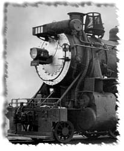

SCALE SIZES FOR STEAM PIPING
I have noticed that the piping for steam locomotives is usually called out as a 'nominal' size such as 2in, 1 1/2in, or whatever. The piping is usually made out of standard steel pipe. As an irrigation designer, I knew that the outside diameter of a steel pipe was not the same as the 'nominal' dimension. For instance, the nominal measurement of "2 inch" steel pipe has an outside diameter of 2.375 inches. I made up this table to convert the actual outside diameter of the pipe sizes to scale inches. Not a big thing, but maybe useful.What I have found recently that is helpful is to find fittings in a smaller scale that will work in larger scales. For instance, a 4" pipe fitting in HO (0.517") or an 8" fitting in N (0.539) is perfect for a 3/4" fitting in F scale. Great for adding detail in the large scales or for doing large piping for a refinery in the smaller scales.
The file is available in three formats. One format is in Excel spreadsheet format. It should be readable by both a Macintosh or a Windows machine. The text version of the table is set up in tab delimited text, so it will set up in columns in your word processor. I used a narrow font, and set the first tab as a right justified tab followed by a regular left justified tab real close to the first tab. The rest of the tabs should then align the columns correctly. You may have to fiddle with the tabs in your word processor to get it to look right. I set the page to landscape (horizontal) and it all fits on a page. I also added a Word document all set up for printing.
I added a few more pipe sizes up to 14". From 14" and above, the outside diameter is the same as the size (14" = 14" diameter). For these conversions you can use the other conversion charts.
Scale Sizes for Schedule 40 steel pipe - (Excel format)
Scale Sizes for Schedule 40 steel pipe - (text format)
Scale Sizes for Schedule 40 steel pipe - (Word format)
If you have comments, suggestions on what you would like to see
or data you might like, you can email me at:
Rick Blanchard - rick@urbaneagle.com


--Back to da data.--